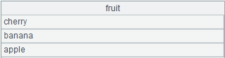

Description:
Create indicator variable for missing values for a table sequence/record sequence variable during modeling.
Syntax:
P.mi(cn)
Note:
The external library function creates indicator variable for missing values in variable cn during modeling; return 1 for a missing value and 0 for a non-missing value. If the missing value rate is ¡Ü5% or ¡Ý95%, do not generate the indicator variable and return null.
Parameter:
|
P |
A table sequence/record sequence |
|
cn |
A string/number, which is the name of column (or the column number starting from 1) – the to-be-pre-processed variable – in a table sequence or record sequence |
Return value:
A table sequence
Example:
|
|
A |
|
|
1 |
=T("D://house_prices_train.csv") |
|
|
2 |
=A1.mi(4) |
 Return indicator variable for missing values in column 4 |
|
3 |
=A1.mi("Alley") |
Return indicator variable for missing values of variable ¡°Alley¡± |